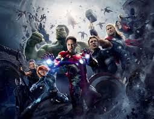

Avengers: Endgame is a 2019 American superhero film based on the Marvel Comics superhero team the Avengers. Produced by Marvel Studios and distributed by Walt Disney Studios Motion Pictures, it is the direct sequel to Avengers: Infinity War (2018) and the 22nd film in the Marvel Cinematic Universe (MCU). Directed by Anthony and Joe Russo and written by Christopher Markus and Stephen McFeely, the film features an ensemble cast which includes Robert Downey Jr., Chris Evans, Mark Ruffalo, Chris Hemsworth, Scarlett Johansson, Jeremy Renner, Don Cheadle, Paul Rudd, Brie Larson, Karen Gillan, Danai Gurira, Benedict Wong, Jon Favreau, Bradley Cooper, Gwyneth Paltrow, and Josh Brolin. In the film, the surviving members of the Avengers and their allies attempt to reverse Thanos's actions in Infinity War
In May 2018, Walt Disney Company CEO Bob Iger said about Marvel's plans beyond Endgame: "I'm guessing we will try our hand at what I'll call a new franchise beyond Avengers, but that doesn't necessarily mean you won't see more Avengers down the road. We just haven't made any announcements about that." Iger added that audiences should not assume that there would not be another Avengers film, due to the popularity of the characters and the franchise.[209] Shortly after the film's premiere, the Russo brothers said that they were not opposed to returning to the MCU in the future (due to their positive relationship with Marvel Studios) but did not plan to do so at that time. In January 2021, Marvel Studios President Kevin Feige said that another Avengers film would be produced "at some point".
